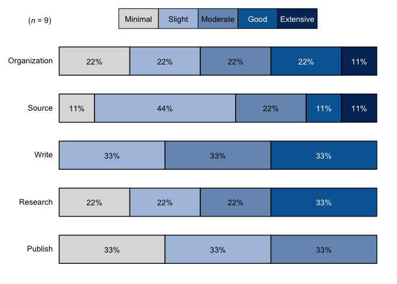
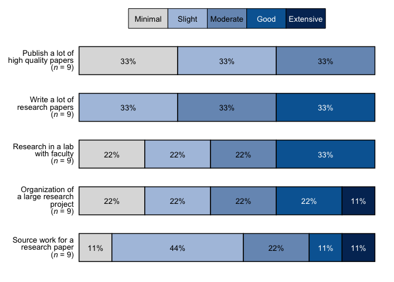
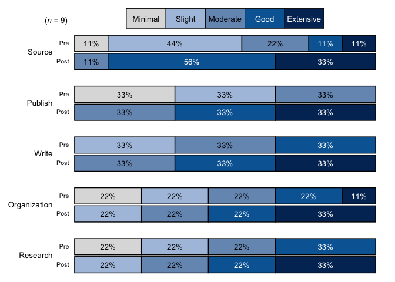
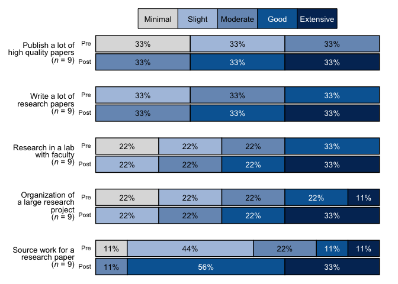
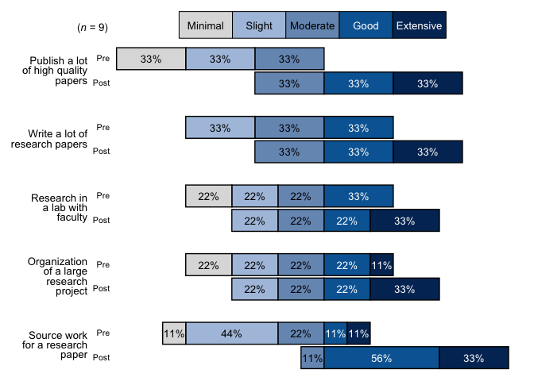
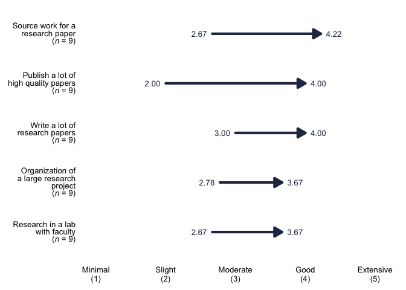
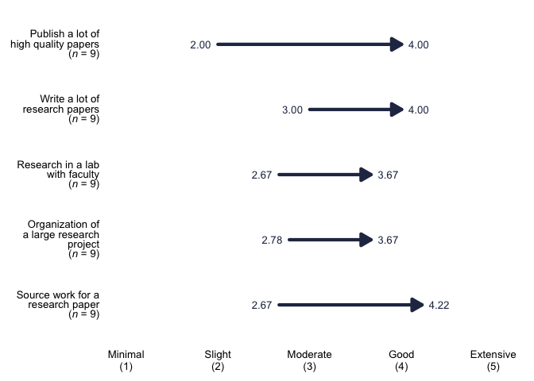

The goal of bre is to make data cleaning and the creation of visualizations easier and faster for Blackstone Research and Evaluation. bre contains functions to create visuals with Blackstone Research and Evaluation branding and helper functions for common data cleaning and manipulation tasks for everyone at Blackstone Research and Evaluation.
Installation
You can install the development version of bre from GitHub with:
# install.packages("devtools")
devtools::install_github("zwcrowley/bre")On the initial installation you will also have to install and import fonts from extrafont package:
# install.packages("extrafont")
library(extrafont)
# Import fonts to get "Gill Sans MT", this only has to be done one time, then `bre` package will use the code below to load the fonts automatically
# for the functions that require that step:
extrafont::font_import()
# Load all fonts:
extrafont::loadfonts("all", quiet = TRUE)Usage
To begin, it is best to convert our numeric data that we use at Blackstone Research and Evaluation to factor variables:
recodeCat()
recodeCat() is a helper function to recode numeric data into factor variables with the desired levels.
recodeCat() takes in two arguments:
df Required, a tibble/data frame of survey items that are numeric variables that need to be converted into factor variables. Numeric variables in the data can be anywhere from 3 to 7 point scales.
scale_labels Required, a named character vector of labels of the desired scale levels for the new factor variables. The function will use this vector to convert the numeric variables into factor variables, all levels must be supplied in the correct range otherwise else NA will be returned for variables outside the range of user supplied values. The named character vector should have the new labels as the “name” and the old labels as the “variable” like this: c(“levels_min_ext <- c("Minimal" = "1", "Slight" = "2", "Moderate" = "3", "Good" = "4", "Extensive" = "5")
items <- dplyr::tibble(
pre_Organization = c(1, 2, 3, 4, 5, 4, 3, 2, 1),
post_Organization = dplyr::if_else(pre_Organization < 5, pre_Organization + 1, pre_Organization),
pre_Source = c(2, 2, 3, 5, 4, 3, 2, 1, 2),
post_Source = dplyr::if_else(pre_Source < 4, pre_Source + 2, pre_Source),
pre_Publish = c(1, 1, 1, 2, 2, 2, 3, 3, 3),
post_Publish = pre_Publish + 2,
pre_Write = c(2, 2, 2, 3, 3, 3, 4, 4, 4),
post_Write = pre_Write + 1,
pre_Research = c(1, 1, 2, 2, 3, 3, 4, 4, 4),
post_Research = pre_Research + 1
)
# Set up the named vector to pass to scale_labels, follow this pattern- c("<new label>" = "<original variable value>"):
levels_min_ext <- c("Minimal" = "1", "Slight" = "2", "Moderate" = "3", "Good" = "4", "Extensive" = "5")
cat_items_1 <- bre::recodeCat(df = items, scale_labels = levels_min_ext)
cat_items_1
#> # A tibble: 9 × 20
#> pre_Organization post_Organization pre_Source post_Source pre_Publish
#> <dbl> <dbl> <dbl> <dbl> <dbl>
#> 1 1 2 2 4 1
#> 2 2 3 2 4 1
#> 3 3 4 3 5 1
#> 4 4 5 5 5 2
#> 5 5 5 4 4 2
#> 6 4 5 3 5 2
#> 7 3 4 2 4 3
#> 8 2 3 1 3 3
#> 9 1 2 2 4 3
#> # ℹ 15 more variables: post_Publish <dbl>, pre_Write <dbl>, post_Write <dbl>,
#> # pre_Research <dbl>, post_Research <dbl>, cat_pre_Organization <fct>,
#> # cat_post_Organization <fct>, cat_pre_Source <fct>, cat_post_Source <fct>,
#> # cat_pre_Publish <fct>, cat_post_Publish <fct>, cat_pre_Write <fct>,
#> # cat_post_Write <fct>, cat_pre_Research <fct>, cat_post_Research <fct>The user simply passes a data frame of all the items to be recoded with a named character vector of the 5 scale likert levels in the corresponding order as the numeric data.
Data Visualizations Examples
bre currently contains three helper functions for generating visualizations: stackedBarChart(), divBarChart(), arrowChart(), and arrowChartGroup().
stackedBarChart()
stackedBarChart() creates a fully stacked bar chart that has the branding/style of Blackstone Research and Evaluation.
stackedBarChart() takes up to 8 arguments, first 2 are required:
df Required, A tibble or data frame of survey items that are categorical/factor variables, in 5 point scales, can be a single time point or pre-post, that will be inserted into a stacked bar chart with Blackstone Research and Evaluation branding.
scale_labels scale_labels Required, a character vector of labels for the response scale, must be in the desired order, e.g. if you have a 5 item scale of minimal to extensive it should look like this: levels_min_ext <- c("Minimal", "Slight", "Moderate", "Good", "Extensive"). This argument accepts a character vector of 3 to 7 items.
pre_post Logical, default is FALSE. If true, returns a pre-post stacked bar chart, arranged by question, this requires data structured as pre-post. If FALSE, returns a stacked bar chart of a single time point.
overall_n Logical, default is FALSE. If TRUE, returns an overall n for all questions that is in the upper left tag of the plot. If False, adds n to each question/item after the respective labels.
percent_label Logical, default is TRUE. Labels the bars based on percentages. If FALSE, labels the bars with the number of answers per response.
question_labels Default is NULL. Takes in a named character vector to both supply labels the questions and sort the order of the questions. The named character vector should have the new labels as the “name” and the old labels as the “variable” sorted in the desired order of appearing in the plot, first item will appear at the top of the plot. See examples.
question_order Logical, default is FALSE. If TRUE, the question order will be taken from the user supplied named character vector passed to question_labels, where the first item will be at the top of the plot and so on. If FALSE, the question order will be the questions with highest positive valenced response options on the top of the plot descending.
width Input a value between 0.3 and 0.8 to set the thickness of the bars. Default is NULL.
Single Time Point Data with Percentage labels Example for stackedBarChart():
# Single time point data:
items_single <- dplyr::tibble(
Organization = c(1, 2, 3, 4, 5, 4, 3, 2, 1),
Source = c(2, 2, 3, 5, 4, 3, 2, 1, 2),
Publish = c(1, 1, 1, 2, 2, 2, 3, 3, 3),
Write = c(2, 2, 2, 3, 3, 3, 4, 4, 4),
Research = c(1, 1, 2, 2, 3, 3, 4, 4, 4)
)
# scale_labels as a named character vector, items in correct order:
levels_min_ext <- c("Minimal" = "1", "Slight" = "2", "Moderate" = "3", "Good" = "4", "Extensive" = "5")
# bar_scale_labels as just the names from levels_min_ext:
bar_scale_labels <- names(levels_min_ext)
# Question labels as a named vector with the naming structure like this: c("{new label}" = "{original variable name}"):
question_labels <- c("Publish a lot of high quality papers" = "Publish",
"Write a lot of research papers" = "Write",
"Research in a lab with faculty" = "Research",
"Organization of a large research project" = "Organization",
"Source work for a research paper" = "Source")
# Recode the numeric to factor variables using the levels from levels_min_ext:
cat_items_single <- bre::recodeCat(items_single, levels_min_ext)
# Select the factor variables:
cat_items_single <- cat_items_single %>% dplyr::select(dplyr::where(is.factor))
# Pass the factor variables and the levels to 'stackedBarChart()':
stacked_chart_single <- bre::stackedBarChart(
df = cat_items_single, pre_post = FALSE, scale_labels = bar_scale_labels,
percent_label = TRUE, width = 0.6
)
stacked_chart_single
# With new labels and order taken from question_labels argument:
stacked_chart_single_labels <- bre::stackedBarChart(
df = cat_items_single, pre_post = FALSE, scale_labels = bar_scale_labels,
question_labels = question_labels, question_order = TRUE, percent_label = TRUE, width = 0.6
)
stacked_chart_single_labels
Pre-Post Data Example for stackedBarChart()
# Select only the categorical/factor vars from the df in the from the oriinal recodeCat() in the first chunk (cat_items_1) using select(tidyselect::where(is.factor):
cat_items_plot <- cat_items_1 %>% dplyr::select(tidyselect::where(is.factor))
# Run the function with the factor items and the character vector of the factor levels:
stacked_chart_pre_post <- bre::stackedBarChart(
df = cat_items_plot, pre_post = TRUE, scale_labels = bar_scale_labels,
percent_label = TRUE, width = NULL
)
stacked_chart_pre_post
# With new labels and order taken from question_labels argument:
stacked_chart_pre_post_labels <- bre::stackedBarChart(
df = cat_items_plot, pre_post = TRUE, scale_labels = bar_scale_labels,
question_labels = question_labels, question_order = TRUE, percent_label = TRUE, width = NULL
)
stacked_chart_pre_post_labels
divBarChart()
divBarChart() creates a diverging and fully stacked bar chart that has the branding and style of Blackstone Research and Evaluation.
divBarChart() takes in up to 7 arguments, the first 2 are required:
df Required, A tibble/data frame of survey items that are categorical/character variables, in 3 to 7 point scales, that will be inserted into a diverging bar chart with Blackstone Research and Evaluation branding.
scale_labelsscale_labels Required, a character vector of labels for the response scale, must be in the desired order, e.g. if you have a 5 item scale of minimal to extensive it should look like this: levels_min_ext <- c("Minimal", "Slight", "Moderate", "Good", "Extensive"). This argument accepts a character vector of 3 to 7 items.
overall_n Logical, default is FALSE. If TRUE, returns an overall n for all questions that is in the upper left tag of the plot. If False, adds n to each question/item after the respective labels.
percent_label Logical, default is TRUE. If FALSE, labels the bars with the number of answers per response.
question_labels Default is NULL. Takes in a named character vector to both supply labels the questions and sort the order of the questions. The named character vector should have the new labels as the “name” and the old labels as the “variable” sorted in the desired order of appearing in the plot, first item will appear at the top of the plot. See examples.
question_order Logical, default is FALSE. If TRUE, the question order will be taken from the user supplied named character vector passed to question_labels, where the first item will be at the top of the plot and so on. If FALSE, the question order will be the questions with highest positive valenced response options on the top of the plot descending.
width Input a value between 0.3 and 0.8 to set the thickness of the bars. Default is NULL.
Examples using divBarChart()
items <- dplyr::tibble(
pre_Organization = c(1, 2, 3, 4, 5, 4, 3, 2, 1),
post_Organization = dplyr::if_else(pre_Organization < 5, pre_Organization + 1, pre_Organization),
pre_Source = c(2, 2, 3, 5, 4, 3, 2, 1, 2),
post_Source = dplyr::if_else(pre_Source < 4, pre_Source + 2, pre_Source),
pre_Publish = c(1, 1, 1, 2, 2, 2, 3, 3, 3),
post_Publish = pre_Publish + 2,
pre_Write = c(2, 2, 2, 3, 3, 3, 4, 4, 4),
post_Write = pre_Write + 1,
pre_Research = c(1, 1, 2, 2, 3, 3, 4, 4, 4),
post_Research = pre_Research + 1
)
# scale_labels as a named character vector, items in correct order:
levels_min_ext <- c("Minimal" = "1", "Slight" = "2", "Moderate" = "3", "Good" = "4", "Extensive" = "5")
# bar_scale_labels as just the names from levels_min_ext:
bar_scale_labels <- c("Minimal", "Slight", "Moderate", "Good", "Extensive")
# Question labels as a named vector with the naming structure like this: c("{new label}" = "{original variable name}"):
question_labels <- c("Publish a lot of high quality papers" = "Publish",
"Write a lot of research papers" = "Write",
"Research in a lab with faculty" = "Research",
"Organization of a large research project" = "Organization",
"Source work for a research paper" = "Source")
# Recode the numeric to factor variables using the levels from levels_min_ext:
cat_items <- bre::recodeCat(items, levels_min_ext)
# Select the factor variables:
cat_items <- cat_items %>% dplyr::select(dplyr::where(is.factor))
# Pass the factor variables and the levels to 'divBarChart()', set so that it
# returns the percent labels on the bars:
div_chart <- divBarChart(
df = cat_items, scale_labels = bar_scale_labels, percent_label = TRUE
)
div_chart
# With new labels and order taken from question_labels argument:
div_chart_labels <- divBarChart(
df = cat_items, scale_labels = bar_scale_labels,
question_labels = question_labels, question_order = TRUE, percent_label = TRUE, width = NULL
)
div_chart_labels
arrowChart()
arrowChart() takes in 6 arguments, the first 3 are required:
df Required, a tibble or data frame of numeric data that has items with the prefix of pre_ and post_.
scale_labels Required, a character vector of labels for the response scale, must be in the desired order, e.g. a 5 item scale of minimal to extensive it should look like this: levels_min_ext <- c("Minimal", "Slight", "Moderate", "Good", "Extensive").
arrow_colors Required, a character vector of hex codes for colors to associate each item, needs to be the same length or longer than the items to place in the same chart.
overall_n Logical, default is FALSE. If TRUE, returns an overall n for all questions that is in the upper left tag of the plot. If False, adds n to each question/item after the respective labels.
question_labels Default is NULL. Takes in a named character vector to both supply labels the questions and sort the order of the questions. The named character vector should have the new labels as the “name” and the old labels as the “variable” sorted in the desired order of appearing in the plot, first item will appear at the top of the plot. See examples.
question_order Logical, default is FALSE. If TRUE, the question order will be taken from the user supplied named character vector passed to question_labels, where the first item will be at the top of the plot and so on. If FALSE, the question order will be the questions with highest post score average on the top of the plot descending.
arrowChart() creates an arrow chart from numeric data based on the pre-post averages for each item with the branding and style of Blackstone Research and Evaluation. arrowChart() sorts the chart with the highest post scores on the top and lowest on the bottom.
Examples using arrowChart()
# Select only the numeric variables from the df in the last chunk (cat_items_1) using tidy select(contains("cat")), adding a group variable that is set as a factor:
items <- dplyr::tibble(
pre_Organization = c(1, 2, 3, 4, 5, 4, 3, 2, 1),
post_Organization = dplyr::if_else(pre_Organization < 5, pre_Organization + 1, pre_Organization),
pre_Source = c(2, 2, 3, 5, 4, 3, 2, 1, 2),
post_Source = dplyr::if_else(pre_Source < 4, pre_Source + 2, pre_Source),
pre_Publish = c(1, 1, 1, 2, 2, 2, 3, 3, 3),
post_Publish = pre_Publish + 2,
pre_Write = c(2, 2, 2, 3, 3, 3, 4, 4, 4),
post_Write = pre_Write + 1,
pre_Research = c(1, 1, 2, 2, 3, 3, 4, 4, 4),
post_Research = pre_Research + 1
)
# Set up the labels for the x-axis, this will match the numeric response in the data:
levels_min_ext <- c("Minimal", "Slight", "Moderate", "Good", "Extensive")
# Question labels as a named vector with the naming structure like this: c("{new label}" = "{original variable name}"):
question_labels <- c("Publish a lot of high quality papers" = "Publish",
"Write a lot of research papers" = "Write",
"Research in a lab with faculty" = "Research",
"Organization of a large research project" = "Organization",
"Source work for a research paper" = "Source")
# Set up a character vector of scale colors to pass to the argument group_colors:
five_colors <- c("#2C2C4F", "#37546d", "#4B9FA6", "#79AB53", "#767171")
# Example with n for each question and original labels:
arrow_chart_1 <- bre::arrowChart(df = items, scale_labels = levels_min_ext, arrow_colors = five_colors,
overall_n = FALSE, question_labels = NULL, question_order = FALSE)
arrow_chart_1
# With new labels, question_order = FALSE, and overall_n set to TRUE:
arrow_chart_labels <- bre::arrowChart(df = items, scale_labels = levels_min_ext, arrow_colors = five_colors,
overall_n = FALSE, question_labels = question_labels, question_order = FALSE)
arrow_chart_labels
# With new labels and order taken from question_labels argument, and overall_n set to FALSE:
arrow_chart_labels_ordered <- bre::arrowChart(df = items, scale_labels = levels_min_ext, arrow_colors = five_colors,
overall_n = FALSE, question_labels = question_labels, question_order = TRUE)
arrow_chart_labels_ordered
arrowChartGroup()
arrowChartGroup() takes in 6 arguments, the first 3 are required:
df Required, a tibble or data frame of numeric data that has items with the prefix of pre_ and post_; and has a categorical group variable to split up the data (e.g. role, gender, education level, etc.).
group Required, the name of the grouping variable in a quoted character string (e.g. “role”, “gender”, “edu_level”, etc.).
scale_labels scale_labels Required, a character vector of labels for the response scale, must be in the desired order, e.g. if you have a 5 item scale of minimal to extensive it should look like this: levels_min_ext <- c("Minimal", "Slight", "Moderate", "Good", "Extensive").
group_colors Required, a character vector of hex codes for colors to associate each group to, e.g. this data has two groups and this function creates an overall group so this function will need a ‘group_colors’ character vector of three colors. ‘group_colors’ need to be in the order you want them associated to the group based on the factor levels for the group variable, last color will be the overall group of “all”
overall_n Logical, default is FALSE. If TRUE, returns an overall n for all questions that is in the upper left tag of the plot. If False, adds n to each question/item after the respective labels.
question_labels Default is NULL. Takes in a named character vector to both supply labels the questions and sort the order of the questions. The named character vector should have the new labels as the “name” and the old labels as the “variable” sorted in the desired order of appearing in the plot, first item will appear at the top of the plot. See examples.
question_order Logical, default is FALSE. If TRUE, the question order will be taken from the user supplied named character vector passed to question_labels, where the first item will be at the top of the plot and so on. If FALSE, the question order will be the questions with highest post score average on the top of the plot descending.
arrowChartGroup() creates an arrow chart from numeric data based on the pre-post averages for each group and the overall group for the whole data set with the branding and style of Blackstone Research and Evaluation. arrowChartGroup() sorts the chart with the highest post scores on the top and lowest on the bottom.
Examples using arrowChartGroup()
# Add a group variable `edu_level` that is set as a factor to the numeric items above called `items`:
arrow_items <- items %>%
dplyr::mutate(
edu_level = factor(c(
"grad", "undergrad", "grad", "undergrad", "grad", "undergrad", "undergrad", "grad", "undergrad"
), levels = c("grad", "undergrad"))
)
# Set up the labels for the x-axis, this will match the numeric response in the data:
levels_min_ext <- c("Minimal", "Slight", "Moderate", "Good", "Extensive")
# Question labels as a named vector with the naming structure like this: c("{new label}" = "{original variable name}"):
question_labels <- c("Publish a lot of high quality papers" = "Publish",
"Write a lot of research papers" = "Write",
"Research in a lab with faculty" = "Research",
"Organization of a large research project" = "Organization",
"Source work for a research paper" = "Source")
# Set up a character vector of scale colors to pass to the argument group_colors:
three_colors <- c("#79AB53", "#4B9FA6", "#2C2C4F")
# Example with n for each question and original labels:
arrow_chart_grouped <- bre::arrowChartGroup(df = arrow_items, group = "edu_level", scale_labels = levels_min_ext, group_colors = three_colors,
overall_n = FALSE, question_labels = NULL, question_order = FALSE)
arrow_chart_grouped
# With new labels, question_order = FALSE, and overall_n set to TRUE:
arrow_chart_grouped_labels <- bre::arrowChartGroup(df = arrow_items, group = "edu_level", scale_labels = levels_min_ext, group_colors = three_colors,
overall_n = FALSE, question_labels = question_labels, question_order = FALSE)
arrow_chart_grouped_labels
# With new labels and order taken from question_labels argument, and overall_n set to FALSE:
arrow_chart_grouped_labels_ordered <- bre::arrowChartGroup(df = arrow_items, group = "edu_level", scale_labels = levels_min_ext, group_colors = three_colors,
overall_n = FALSE, question_labels = question_labels, question_order = TRUE)
arrow_chart_grouped_labels_ordered
More functions and visuals will be added to bre package as needed, be sure to reach out with any ideas for the package or issues!